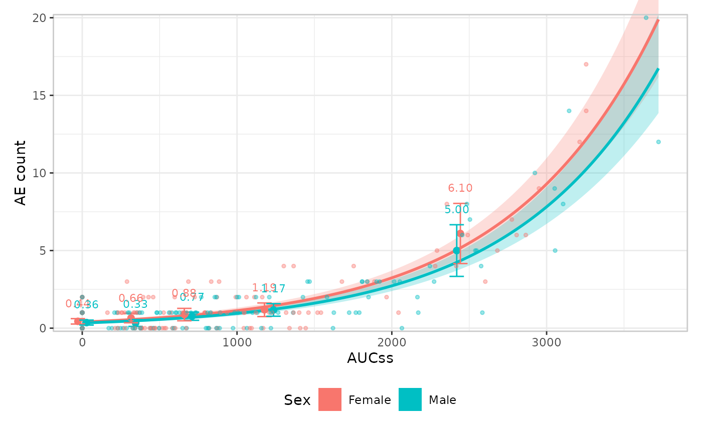
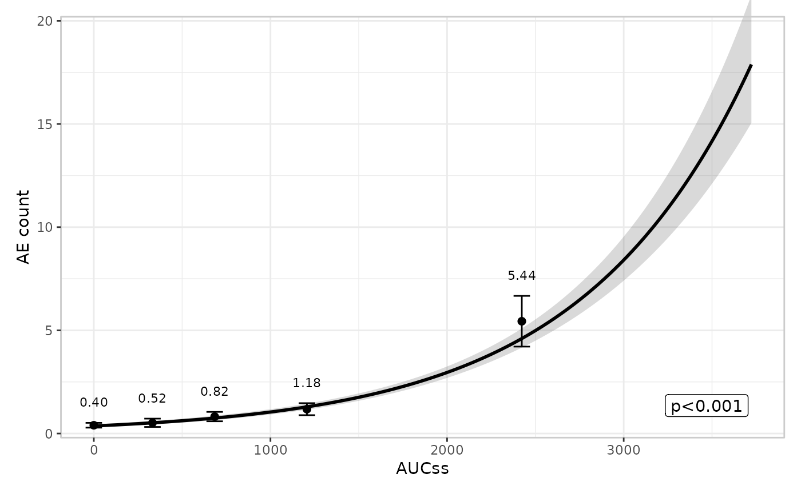
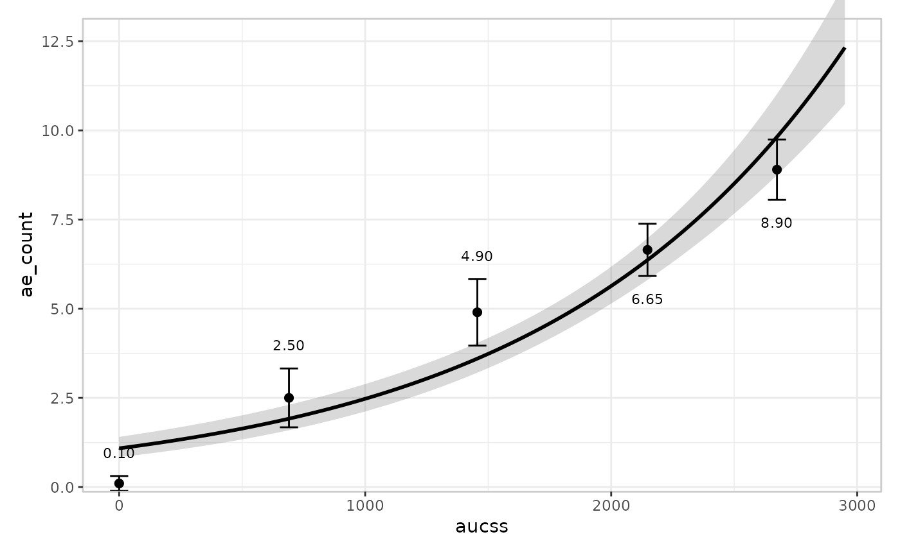
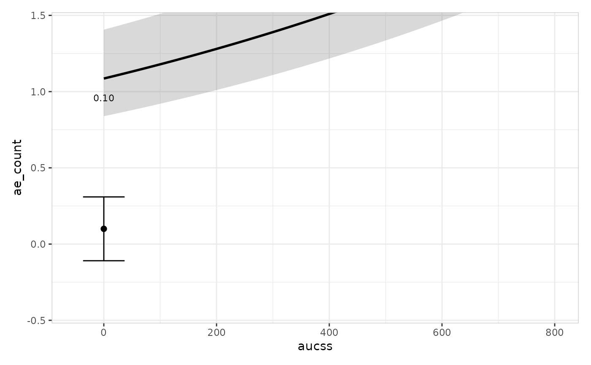
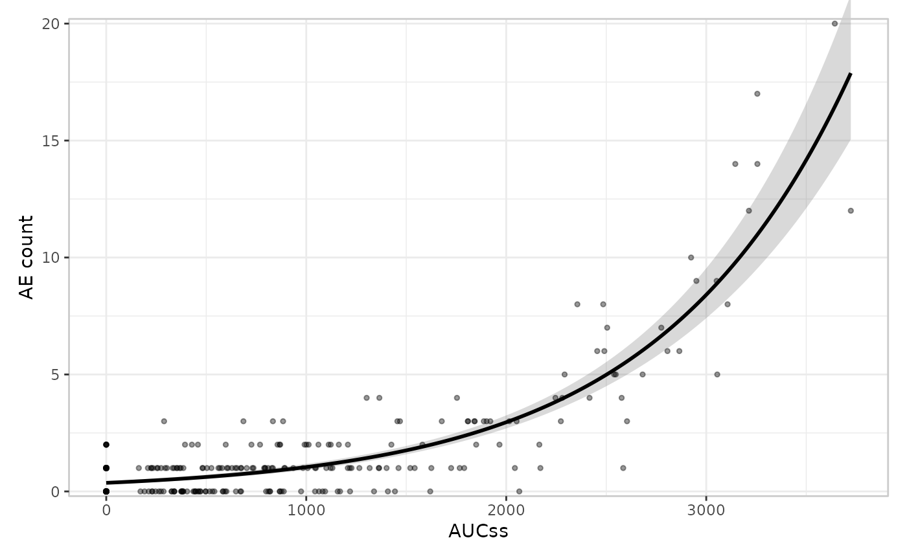
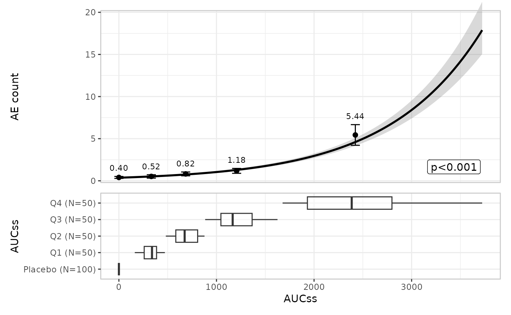

erplots draws exposure-response plots from any model that
implements [er_model_interface]. This article uses a Poisson model
fitted with erglm to cover count-response specifics – most importantly,
the response_type = "count" declaration and when it
matters. The model and group components work identically for every
response type, so this article only shows their default usage and links
to the binary responses article for the
builder-swapping detail (spaghetti plots, violin plots).
Fit the model first
mod_poisson <- erglm_model(ae_count ~ aucss, erglm_data, family = poisson())Count responses, such as an adverse-event count, auto-detect as
"continuous" under er_plot()’s
"auto" logic (they’re neither logical nor confined to
{0, 1}), and are summarised the same way a genuinely
continuous response is (bin mean plus t-interval) unless you declare
response_type = "count" explicitly.
Defining plots
erglm_data |>
er_plot(aucss, ae_count) |>
er_plot_show_model(mod_poisson) |>
er_plot_show_quantiles() |>
plot()
Stratification
Stratification adds colour across all components, and requires a
model that includes the stratification variable as a term. See the binary responses article for
a fuller worked example, including how to suppress stratification for
specific components with keep_strata = FALSE.
mod_poisson_sex <- erglm_model(
ae_count ~ aucss + sex, erglm_data, family = poisson()
)
erglm_data |>
er_plot(aucss, ae_count, stratify_by = sex) |>
er_plot_show_model(mod_poisson_sex) |>
er_plot_show_quantiles() |>
er_plot_show_data() |>
plot()
Model component
The model layer doesn’t look at response_type at all –
it only consumes [er_predict()]/[er_simulate()] output – so it works
exactly the same way as for a binary response. See the binary responses article for
build_model_spaghetti(); the default builder is used
here:
erglm_data |>
er_plot(aucss, ae_count) |>
er_plot_show_model(mod_poisson) |>
er_plot_show_quantiles() |>
plot()
Quantile component
Under auto-detection, a count response is summarised the same way a continuous response is – bin mean plus t-interval:
erglm_data |>
er_plot(aucss, ae_count) |>
er_plot_show_model(mod_poisson) |>
er_plot_show_quantiles() |>
plot()
Declaring response_type = "count" swaps the t-interval
approximation for an exact Poisson interval (bin mean plus
[poisson_interval()] instead of [t_interval()]), which never produces a
negative lower bound – useful for low-count bins, where the t-interval
approximation can. For erglm_data’s own
ae_count, none of the bin means are low enough for this to
actually happen, so the two plots above would look almost identical if
you re-ran the last one with response_type = "count". To
make the difference concrete, here’s a synthetic dataset where the
placebo arm has only 2 events among 20 subjects:
set.seed(84)
placebo_counts <- rpois(20, 0.05)
while (sum(placebo_counts) != 2) placebo_counts <- rpois(20, 0.05)
aucss_dosed <- sort(runif(80, 100, 3000))
count_dosed <- rpois(80, 0.1 + 0.003 * aucss_dosed)
low_count_data <- data.frame(
aucss = c(rep(0, 20), aucss_dosed),
ae_count = c(placebo_counts, count_dosed)
)
mod_low_count <- erglm_model(ae_count ~ aucss, low_count_data, family = poisson())The default (t-interval) path’s placebo-arm error bar dips visibly below zero – a nonsensical negative event rate:
low_count_data |>
er_plot(aucss, ae_count) |>
er_plot_show_model(mod_low_count) |>
er_plot_show_quantiles() |>
plot() +
ggplot2::coord_cartesian(ylim = c(-0.5, 1.5), xlim = c(-50, 800))
#> Coordinate system already present.
#> ℹ Adding new coordinate system, which will replace the existing one.
Declaring response_type = "count" keeps the same
placebo-arm point estimate but replaces the t-interval with an exact
Poisson interval, which stays non-negative:
low_count_data |>
er_plot(aucss, ae_count, response_type = "count") |>
er_plot_show_model(mod_low_count) |>
er_plot_show_quantiles() |>
plot() +
ggplot2::coord_cartesian(ylim = c(-0.5, 1.5), xlim = c(-50, 800))#> Coordinate system already present.
#> ℹ Adding new coordinate system, which will replace the existing one.
Data component
er_plot_show_data() adds the raw observations at their
true (exposure, response) coordinates via
build_data_overlay(), the default and only built-in builder
for a count response – no jitter is needed, since the response isn’t
confined to 0/1:
erglm_data |>
er_plot(aucss, ae_count) |>
er_plot_show_model(mod_poisson) |>
er_plot_show_data() |>
plot()
There’s no built-in panel-based alternative for a count response –
build_data_boxjitter() (the older, panel-based
responders/non-responders design covered in the binary
responses article) is binary-only. If you need a panel-based builder
here, you can write a custom one and tag it with
er_layout(fn, "panel") – see design.Rmd’s
“Extending erplots” section.
Group component
The group layer doesn’t look at response_type at all –
it only consumes the exposure variable – so it works exactly the same
way as for a binary response. See the binary responses article for
multiple grouping variables and build_group_violin(); the
default builder and a single grouping variable are shown here:
erglm_data |>
er_plot(aucss, ae_count) |>
er_plot_show_model(mod_poisson) |>
er_plot_show_quantiles() |>
er_plot_show_groups(group_by = aucss) |>
plot()
VPC plot
er_vpc_plot() takes the same
response_type = "count" declaration as
er_plot(), swapping in the exact Poisson interval for the
observed-side summary:
sim_poisson <- erglm_vpc_sim(mod_poisson, seed = 6142)
er_vpc_plot(
erglm_data, sim_poisson, aucss, ae_count, group_by = aucss,
response_type = "count"
)